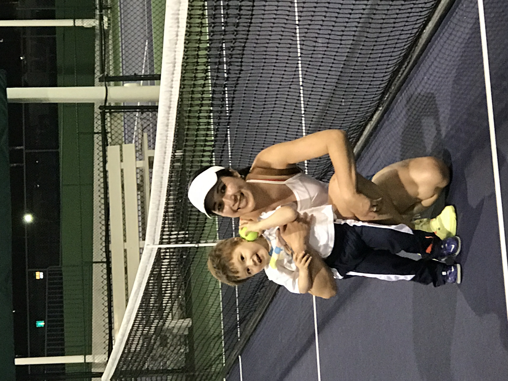

About Me

I was born in a beautiful island of Bali, Indonesia. I have 3 older siblings, 2 brothers and 1 sister. My parents and 2 siblings still live in Bali. My oldest brother lives in Los Angeles, CA and works for NBA Clippers. I came to the U.S. as an exchange student in High School in California. I went to San Diego State University, San Diego, CA and graduated B.S. in CS. I stayed and worked in San Diego, CA for a few years as a software engineer.
I met my husband, Jeremy at a local tennis club in Salt Lake City, Utah while I was in a business trip. I crashed in into the Men's 4.5 and up's work out and I was the only female player. The men thought I can't play until I started to make them run all over the court. They didn't know that I played in college. After traveling back and forth to Utah, I decided to move here as my husband's entire family lives here and have been living here for the past 9 years.
We have 3 children: a daughter who is almost 14 year old, 2 boys who are 12 and 3 years old. Our daughter is in competitive soccer and older boy is in competitive Basketball and Football. We also have 2 furry children, a black lab and husky mixed with Sheperd.
In my free time, I still enjoy playing tennis with my husband, family and friends. I also enjoy watching my children's games and traveling the world with my little family. Yoga, Crafting and Surfing are things I love to do as well.
As far as for a career, the last company I worked for, it's in Dental software industry. Recently, I decided to have a little adventure by building a small import export business and yet still in the transition to complete everything. I am pretty excited to use these new skills that I am learning from this web dev bootcamp to design my own company website.